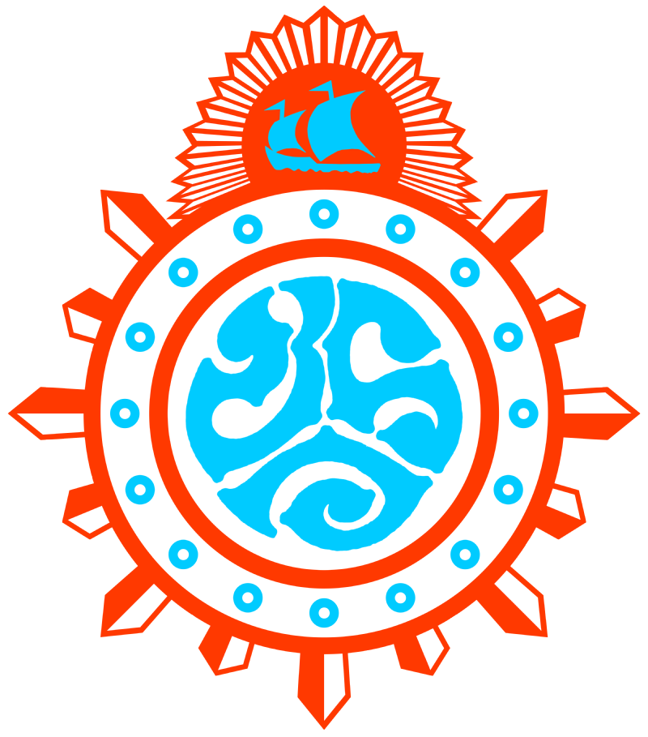

ทีมของเรา
นาซ่า สาขาหน้าปากซอย
ป้ายร้านด้านขวาเป็นมุกจากชื่อทีม
[รูปสมาชิก]
[ชื่อเล่น][หน้าที่][รูปสมาชิก]
[ชื่อเล่น][หน้าที่][รูปสมาชิก]
[ชื่อเล่น][หน้าที่]ครูที่ปรึกษา [ชื่ออาจารย์ที่ปรึกษา]

โรงเรียนชลราษฎรอำรุง จ.ชลบุรี ตัวแทนภาคตะวันออกซอย นาซ่าSoi NASA
02